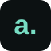

Adrien Does Post Rock
Mes liens
@adriendoespostrock
Applications pour musiciens, outils MIDI et projets autour de Logic Pro, du Kemper Player et de la scène.
PPPitchPilotSéquenceur de pitch MIDI pour votre DAW›
TRTrackRelaySetlists et contrôle de Logic Pro sur scène›
KCKemperControlDAWContrôler le Kemper Player depuis le DAW›
KDKemper DisplayVoir le Rig et les effets en un coup d’œil›
GHMes projets sur GitHubVersions, guides et téléchargements›
WWCWhen Waves CollideMon groupe de rock instrumental›
☕Offrir un caféSoutenir les projets partagés gratuitement›